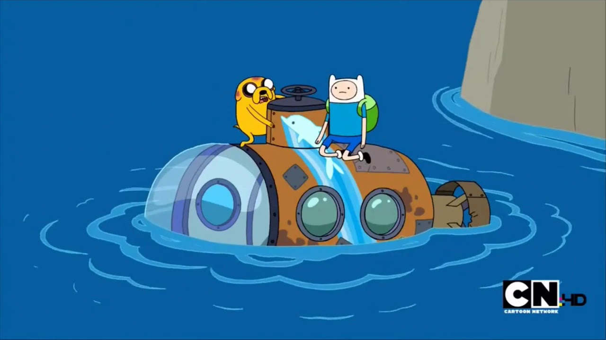
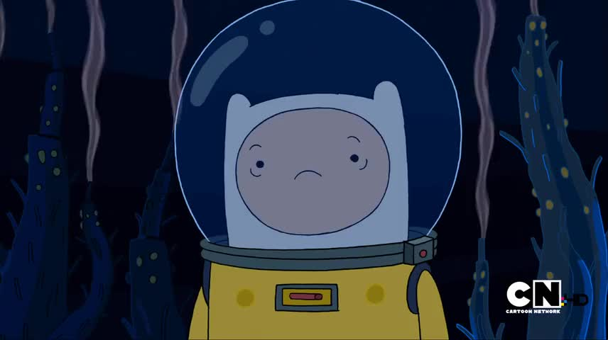

"isso, perfeito. pra deixar de ser palhaço ai vem o quarto passo."
"UQUE?? Você disse que era um plano de 3 passos, amigaço"
"Eu não sou bom de contar kkkk vambora, vamos chutar o seu medo pra onde o sol nao vai brilhar no pepino
do mar"
Eles entram num submarino

"Saca só que moleza 100% de beleza"
"é bem matematico, seu problematico"
"um abismo escurinho, vamos dar uma olhada amiguinho"
Finn surta de novo ao ver o buraco e começa a puxar alavancas, o que faz o submarino bater e começar a
encher de agua.
"Passo 5, sua bestinha.. Vista esta roupinha"

Eles estão saindo do submarino, mas Finn entra em pânico e puxa a emergencia, que faz a roupa dele inflar,
isso e empurra o Jake que bate a cabeça e afunda no buraco.
Finn flutua enquanto Jake cai no buraco escuro.
Quando finn chega na superfice o medo dele aparece
"Hahahaha patético voce nao consegue superar seu medo nem quando seu melhor amigo está prestes a morrer
seu corpo heróico nao vai deixar voce resgatar o Jake"
O que o Finn faz agora?:
1 - Discute com o medo pra provar que ele está errado
2 - Da uma pancada na própria cabeça com uma ferramenta.
3 - Pula na agua pra ir resgatar o Jake.